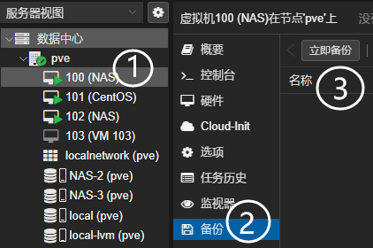
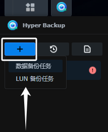

群晖NAS-备份
备份图示：
graph LR 手机--同步-->NAS 电脑--同步-->NAS NAS--备份-->NAS_2 NAS_2--异地备份-->家里电脑
按我理解的备份321原则：
3份数据在：手机电脑端、NAS端、家里电脑
2种储存介质：备份在【NAS】【NAS_2】这两个不同硬盘
1异地备份：保留一份在家里电脑，也算是物理隔离。
热备份-Drive
在NAS服务器上安装套件【Drive】。
对于一些变更频繁的文件，使用Driver仅上传的方式，到“另一个NAS远程”
graph LR NAS--备份-->NAS_2--异地备份-->家里电脑
冷备份-Hyper
在NAS服务器上安装套件【Hyper-backup】。
对于一些基本不变的照片，使用Hyper-backup的数据备份方式，到“另一个NAS远程”
graph LR NAS--备份-->NAS_2
PVE虚拟机
备份
PVE虚拟机备份

当然这份备份还是留存在PVE里面的（本地备份）。我们求稳的话，还可以将这个备份文件.zst，拷贝到异地硬盘保存。
还原
导入备份：虚拟机备份文件导入
还原备份：选泽文件还原（这里还原的是否会带有储存的数据，还是说只是系统环境？）
NAS环境备份
Hyper-backup的LUN备份
